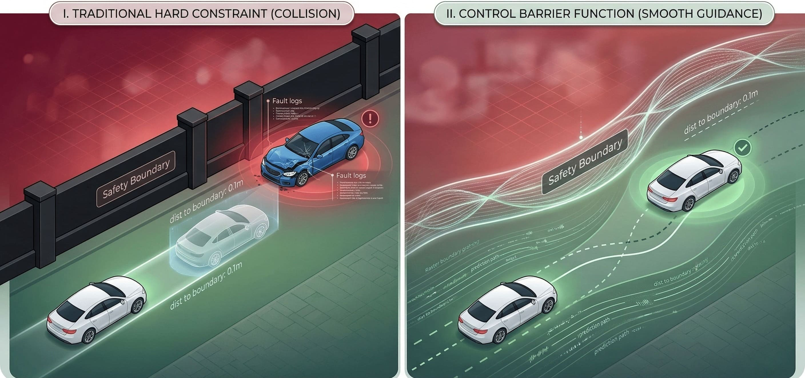
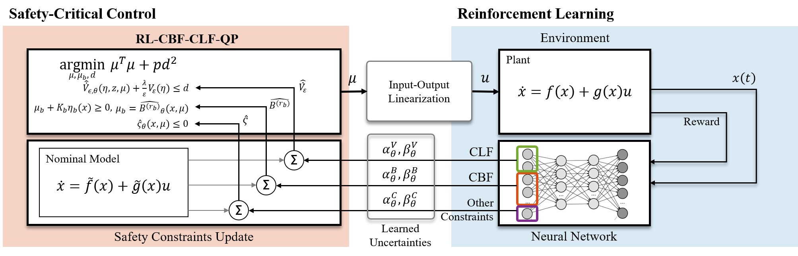
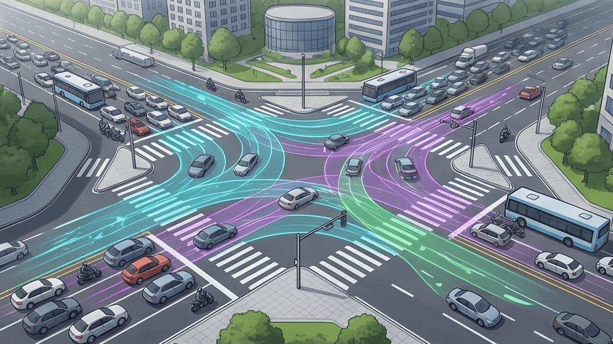
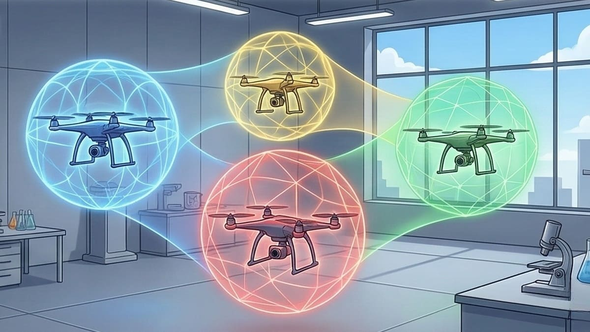
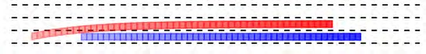
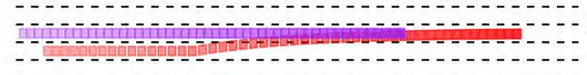
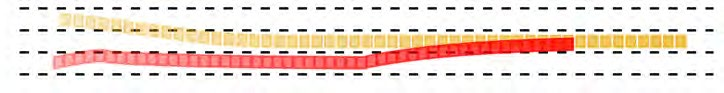
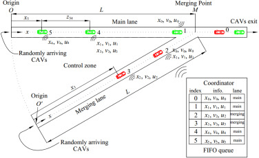
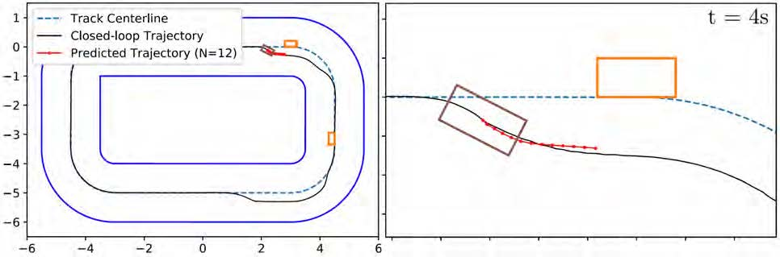

Abstract: Safety is an important topic in control systems. In the past few decades, the rapid development of large-scale complex cyber-physical systems has dramatically stimulated the need for safety, and Control Barrier Functions (CBFs) have emerged as an advanced, flexible, and efficient method. Upon comparison of QP-based and MPC-based control frameworks, we discovered that by employing slack variables to balance safety and feasibility, frameworks like NMPC-DCBF are able to effectively achieve a perfect balance.
1. Introduction: The Urgent Need for Safety
The importance of safety for cyber-physical systems (CPS) cannot be overstated. These systems integrate computation with physical processes and are ubiquitous in critical applications such as self-driving cars, robotic systems, traffic management, and industrial automation.
Primary Motivation
Safety Assurance: To provide a systematic approach for ensuring that safety constraints are satisfied at all times during the operation of a system.
Advanced Motivation
Integration with Complex Systems: CBFs can be seamlessly integrated with existing control objectives (like tracking or optimization) allowing for simultaneous achievement of safety and performance.

Figure 1: Evolution from traditional boundaries to dynamic CBF constraints.
2. The Mathematical Foundation of CBFs
At their essence, CBFs are powerful mathematical tools designed to implement safety control policies. We start by assuming a nonlinear affine control system:
Based on this, we formulate the safe set $\mathcal{C}$ using a continuous function $h(\mathbf{x})$. As long as the derivative of the CBF satisfies the safe condition, the set $\mathcal{C}$ remains forward invariant (safe):
From Stability to Safety: CLFs and CBFs
The CBF evolved from the safety-based Barrier Function and the stability-based Lyapunov Function. To understand CBFs, we must first look at Control Lyapunov Functions (CLFs), which play a critical role in the stability analysis of dynamical systems. A CLF $V(\mathbf{x},\mathbf{u})$ is positive definite and satisfies:
where $\gamma$ is the control gain. Higher values of $\gamma$ usually lead to a faster response towards equilibrium but increase the risk of instability. The infimum maintains stability under all possible control inputs.
On the other hand, Barrier functions and Barrier certificates were developed to prevent boundary violations by distinguishing safe and unsafe regions. When combining the principles of CLFs and Barrier Certificates, we derive the CBF formulation. Compared with the CLF constraint which provides an exponential decay with the upper bound converging to zero, the CBF constraint provides a lower bound of exponential decay to keep the system state within safe boundaries across all possible control inputs.
The Evolution: Variants of CBFs
Traditional CBFs are primarily designed for first-order continuous systems (where the control directly influences the derivative of the state). However, modern robotics face challenges like high-order dynamics, discrete-time control, and uncertainty.
- Exponential CBFs (ECBFs): Extends safety to high-order systems (like considering velocity and acceleration simultaneously).
- ► Exponential Convergence: $b( \mathbf{x}(t) ) \geq Ce^{At}\eta( \mathbf{x}_0) \geq 0$
- ► Advantages: Rapid Convergence, Enhanced Robustness.
- High-Order Control Barrier Functions (HOCBFs): Also developed to handle higher-order derivatives of the system state using class $\mathcal{K}$ functions ($\alpha_i$).
- ► Advantages: Enables a nuanced control strategy considering overall system dynamics.
- Discrete-Time CBFs (DCBFs): The foundation for digital control algorithms running on discrete-time steps $k$:
- ► Advantages: Multi-step predictions, Local Deadlock Prevention, handles Non-Convex Constraints.
Comparing the Variants
ECBFs vs HOCBFs: Both apply to high-order control systems and degenerate to ordinary CBFs when $r=1$, allowing mutual conversion. HOCBFs are well-suited for high-dynamic complex environments where various aspects of behavior must be addressed simultaneously. ECBFs excel in scenarios demanding immediate reactions to imminent dangers by converging at an exponential rate.
DCBFs: Specifically enforce constraints at discrete time steps. Segmenting the temporal domain facilitates handling non-convex constraints but introduces potentially impactful discretization errors.
3. CBFs in Optimal Control Systems
In applications like Adaptive Cruise Control (ACC) where we must adjust speed while maintaining a safe distance, we rely on three pillars: CLFs for stability, CBFs for safety boundaries, and Quadratic Programming (QP) to solve the mathematical optimization.
Controller Design: CBF-QP vs CLF-CBF-QP
- Motivation: Standard ACC Problem
- Structure: QP + CBF constraint
- Benefits: Safety, real-time performance
- Drawbacks: Ignores stability; performance merely meets the safety constraint limits.
- Motivation: ACC Problem + Stability
- Structure: QP + CBF constraint + CLF constraint (with slack variable)
- Benefits: Safety, stability, real-time performance
- Drawbacks: Computational complexity, requires slack variable tuning.
The CBF-based QP approach optimizes autonomous vehicle performance by minimizing a cost function while considering safety constraints. The core framework is as follows:
In CLF-CBF-QP, we introduce a slack variable $\delta$ to prevent the QP optimization from becoming infeasible due to strict, conflicting constraints. It permits a certain level of violation of the CLF constraints (stability), whereas violations of the CBF constraints (safety) are strictly impermissible.
Model Predictive Control with CBFs
Pure QP acts greedily in one step. Model Predictive Control (MPC) optimizes control inputs by predicting the future states of the system at each time step. Before introducing standard MPC, we first consider unifying DCBF and DCLF into one optimization program for discrete-time domains:
By bringing this into a predictive horizon, MPC-DCBF achieves enhanced safety by projecting multi-step cost functions. For example, a racing car can predictively overtake an opponent safely avoiding boundaries.
The Ultimate Conflict: Nonlinear MPC (NMPC)
"Feasibility of the optimization and the system safety cannot be enhanced at the same time theoretically."
To balance this inherent conflict, we introduce slack variables $\omega_k$ directly into the CBF bounds within NMPC frameworks. NMPC utilizes predictive models to handle non-linear dynamic behaviors, preventing boundary stagnation.
- Structure: Cost function with CLF + CBF constraint with slack variable.
- Difference: CLF is used as a terminal cost, amplified by parameter $\beta$.
- Benefits: Balances feasibility with safety perfectly. Slack $\omega_k$ relaxes the CBF decay rate.
- Structure: Cost function + CBF constraint (slack) + CLF constraint (slack).
- Difference: CLF is isolated as a constraint with its own slack variable $\delta_k$.
- Benefits: Adjusts the time step of constraints (e.g. $M_\mathrm{CLF}$), maximizing control over computation complexity.
Comparison of Optimization Frameworks
The system safety can be influenced by many factors. Decreasing $\alpha_k$ increases overall system safety but restricts the feasible region, creating a trade-off. NMPC-DCBF and NMPC-DCLF-DCBF introduce the slack variable $\omega_k \geq 0$ which ensures the safety set doesn't needlessly shrink, thus resolving the conflict between optimization feasibility and strict safety bounds.
| Approaches | Stability Criteria | Safety Criteria | Constraint(s) | Opt. Feasibility |
|---|---|---|---|---|
| CBF-QP | Cost | Constraint | one-step | Medium |
| CLF-CBF-QP | Constraint | Constraint | one-step | Medium |
| DCLF-DCBF | Constraint | Constraint | one-step | Medium |
| MPC-DCBF | Cost | Constraints | multi-step | Low |
| NMPC-DCBF | Cost | Constraint(s) | one/multi-step | High |
| NMPC-DCLF-DCBF | Constraint(s) | Constraint(s) | one/multi-step | High |
Table 1: Optimization structure and performance comparison of control methods. All methods ensure Strong System Safety.
4. Signal Temporal Logic (STL) Tasks
Signal Temporal Logic (STL) is a formal language for specifying temporal properties of signals in dynamic systems. It allows the expression of complex temporal behaviors such as "eventually," "always," or "until." When combined with CBFs, the STL specification can be encoded into a safety set $S$, enabling the synthesis of controllers that ensure safety and comply with temporal logic requirements.
The STL fragment consists of temporal operators and logical operations. The syntax is given by:
In this fragment, $\mu$ denotes atomic propositions which are Boolean-valued functions of the state. $G_{[a,b]}\psi$ ("always") means $\psi$ must hold at all times within $[a, b]$, while $F_{[a,b]}\psi$ ("eventually") means $\psi$ must hold at some point within $[a, b]$. $U_{[a,b]}$ ("until") means $\psi_1$ must hold until $\psi_2$ becomes true.
Smoothing Approximation
Smoothing approximation is used to encode conjunctions in STL tasks, typically using the log-sum-exp function as a proxy for the minimum operator. Given a set of time-varying CBFs $b_i(\mathbf{x},\mathbf{u},t)$, the smooth approximation of the minimum operator (conjunction) is defined as:
As the positive parameter $\eta \to \infty$, the approximation becomes an exact representation of the min operator. The smooth approximation of the disjunction (OR) of CBFs is defined as:
Encoding STL Specifications with time-varying CBFs
1. Single Temporal Operators
- Globally $G$: Define $b_1(v,t) \geq h_1(v)$ for all $t \in [a, b]$.
- Finally $F$: Ensure $b_1(v,t)$ reaches threshold $h_1(v)$ at some time within $[a, b]$.
- Until $U$: Define $b_1$ and $b_2$ to ensure $\mu_1$ holds until $\mu_2$ holds. The condition $b(\mathbf{x},\mathbf{u},t) \geq 0$ ensures satisfaction.
2. Conjunctions within single operators
For sequences containing conjunctions (e.g., $G_{[a,b]}(\mu_1 \land \mu_2)$ or $F$ or $U$ variants), multiple CBFs are defined for each predicate $\mu_i$ and combined using the smooth approximation technique to encode the conjunction.
3. Hybrid Control for Conjunctions & Disjunctions of Temporal Operators
To manage combinations of different temporal operators, a hybrid control scheme is introduced with a switching mechanism:
- ► Switching Mechanism: A function $o_i(t) \in \{0, 1\}$ activates or deactivates CBFs based on current relevance.
- ► Conjunction Composite CFB: $b_j(\mathbf{x},\mathbf{u},t) := - \ln \left( \sum_{i=1}^p o_i(t)\exp(-b_i(\mathbf{x},\mathbf{u},t)) \right)$
- ► Disjunction Composite CFB: $b(\mathbf{x},\mathbf{u},t) := \frac{\sum_{j=1}^q o_j(t)b_j(\mathbf{x},t)\exp(\eta b_j(\mathbf{x},t))}{\sum_{j=1}^q o_j(t)\exp(\eta b_j(\mathbf{x},t))}$
The temporal properties of CBFs need to be designed taking STL semantics into account. Controllers can guarantee both absolute safety and complex timing compliance.
5. Reinforcement Learning in Complex Systems
Integrating safety measures within the reinforcement learning framework is an essential topic. In relatively simple or low-dimensional systems, model-based Safety-Critical approaches make it easy to validate system performance. However, when encountering Safety-Critical control problems in complex and high-dimensional systems, pure model-based approaches face challenges. Model-free reinforcement learning methods can provide full-order dynamics models.
To address model uncertainty in Safety-Critical control problems, a unified reinforcement learning-based framework RL-CBF-CLF-QPs is designed for learning model uncertainty in CLF, CBF, and other affine constraints by dynamic control in a single learning process.
The Main Challenge
Without proper bounds, RL agents will potentially learn unsafe policies by repeatedly experimenting with the inevitable encounters with constraint violations during the exploration phase. The CBF mathematically prevents this.

Figure 2: RL-CBF-CLF-QP framework mapping learned uncertainties to safety bounds (Choi, J., et al. 2020).
Beyond Model-Free: Model-Based Constraint RL
Model-free reinforcement learning can only learn safety policies by repeatedly experimenting with the inevitable encounters with constraint violations, which can pose serious safety problems during training.
A recent model-based constraint reinforcement learning approach incorporating a CBF directly addresses this. This approach applies the CBF to handle state constraints by mathematically penalizing tendencies to approach constraint boundaries. Leveraging model information, it enables the safe optimization of reinforcement learning policies without ever violating actual safety constraints. Furthermore, an adaptive mechanism is implicitly introduced to automatically select appropriate parameters, thereby strictly enhancing the performance of constraint satisfaction in high-dimensional deployments.
6. Real-World Applications
The control strategy explored in the previous sections is designed to ensure that the system does not enter an unsafe state or region during operation. Consequently, in domains where safety is paramount, the application of CBFs becomes critical.
In self-driving technology, CBFs ensure the vehicle stays within a safe operating range while driving. For example, they can avoid collisions or maintain lanes. In robotic systems, CBFs ensure that robots remain safe while avoiding obstacles and accomplishing tasks. They help robots navigate safely in complex environments. In manufacturing and industry, CBFs are used to ensure that robotic arms or automated equipment operate within safe constraints to prevent mechanical failure.
Following this, CBFs are revolutionizing physical systems across four major domains:
Autonomous Driving
Manipulator Robots

Traffic Management

Multi-Agent Systems
Three core automotive application scenarios will be introduced in detail:
6.1 Lane Changing
A new Safety-Critical lane change controller has been developed using a Finite State Machine (FSM) comprising five states: two Lane Change States, two Midway Return States, and an ACC State.
The CLF-CBF-QP framework is used to compute the optimal inputs to the system through a rule-based control strategy. The CLF constraint tracks the desired position without needing a reference trajectory, while the CBF constraint ensures the ego vehicle maintains a safe distance from surrounding vehicles.

(a) Ego vehicle overtakes a slow leading one

(b) Vehicle in target lane approaches ego one

(c) Ego vehicle avoids another surrounding vehicle
Figure 3: Simulations of lane changing using CLF-CBF-QP (red represents ego vehicle) (He, et al. 2021).
The rule is that during advancement, the FSM can automatically switch between different states according to driver commands and the traffic environment. This allows the ego vehicle to find safe opportunities for collision-free lane-changing maneuvers. At each moment, the vehicle can keep its distance and either avoid colliding with surrounding vehicles or successfully change lanes.
6.2 Lane Merging
To improve traffic network performance, traffic management at merging points is crucial. The traffic merging problem of Connected and Automated Vehicles (CAVs) involves vehicles randomly arriving at lane origins $O$ and $O'$ and merging at a point $M$, where conflicts frequently occur.

Figure 4: Vehicles merging at the merging point from two lanes using CBF-QP (Xiao, Wei, et al.).
There must be sufficient safety space at point $M$, meaning the distance between the vehicle on the lane and the vehicle in front at $M$ is large enough. In addition to this constraint, the distance and speed of vehicles in the same lane must be limited. We map these safety constraints for state $x$ using CBF-QP to compute a series of subproblems in real-time.
6.3 Overtaking
In standard MPC frameworks (without CBFs), the safety criterion is usually enforced with a Euclidean distance constraint. This ensures the distance between two cars remains greater than a specified safety factor. However, this often results in the car not taking evasive maneuvers until it is alarmingly close.

Figure 5: Overtaking another car using MPC-DCBF through predicted reachable trajectories (Zeng, J., et al. 2021).
The solution involves integrating MPC with DCBF into a single optimization problem known as MPC-DCBF. The CBF constraint compels the system to proactively avoid the other car along a projected reachable set. This approach ensures stable trajectory tracking without deviations while safely maintaining distance throughout the entire overtaking maneuver.
7. Conclusions
To summarize our deep dive into Control Barrier Functions:
- ► CBFs: The ultimate safety policy mechanism in modern cyber-physical systems.
- ► Control Systems: Seamlessly solves standard ACC problems and handles complex MPC optimization tasks.
- ► Complex Systems: Bridges the gap in unpredictable environments, specifically for Reinforcement Learning (RL) tasks.
- ► The Challenge: The eternal conflict between absolute safety and operational performance.
- ► Ongoing Future: Developing Adaptive CBFs to dynamically adjust constraints based on real-time environmental context.